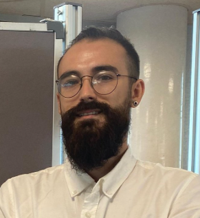

Ph.D. en Bioingeniería
Visual Neuroprosthesis Laboratory · Universidad Miguel Hernández

Apasionado por la intersección entre biología, neurociencia, robótica y comportamiento, desarrollo soluciones que conectan la tecnología con el potencial humano para restaurar capacidades sensoriales perdidas.
Durante los últimos años, en el Laboratorio de Neuroprótesis Visuales de la Universidad Miguel Hernández, he desarrollado el análisis comportamental para prótesis visuales corticales, explorando cómo la neurociencia y la ingeniería pueden converger para restaurar la percepción visual en personas ciegas.
Mi investigación combina análisis de datos (Python, MATLAB, C++), neuroimagen, electrofisiología, modelos computacionales y deep learning. Colaboro activamente en equipos multidisciplinares, presentando regularmente mis hallazgos en conferencias internacionales.
2026 Arantxa Alfaro, Leili Soo, Dorota Waclawczyk, Roberto Morollón, Fabrizio Grani, Eduardo Fernandez
We describe the case of a participant in a clinical trial investigating intracortical microstimulation of the visual cortex to provide a limited yet functional sense of vision to the profoundly blind. Prior to his formal enrolment, he was completely blind due to bilateral Non-arteritic Anterior Ischemic Optic Neuropathy. Following the initiation of brain electrical microstimulation experiments, he experienced a remarkable recovery of spontaneous vision. The regained sight, after more than 3 years of complete blindness, enabled him to perceive light and motion again and even read large characters and words, enhancing his confidence in mobility and daily activities. We conducted several behavioural and electrophysiological tests to assess and quantify his vision over time.
Brain Communications
2025Dorota Waclawczyk, Leili Soo, Roberto Morollon Ruiz, Avi Caspi, Eduardo Fernandez Jover
Cortical prostheses aim to provide artificial vision to blind individuals by electrically stimulating the occipital cortex to induce visual sensations called phosphenes. Previous research demonstrates that phosphene location is influenced by gaze position, despite fixed electrode placement in the occipital cortex. However, for patients without eyes, it is unclear whether intended eye movements can still modulate phosphene location and, if they do, whether these movements can be accurately recorded and incorporated into prosthetic control algorithms. As part of a clinical trial using intracortical electrical stimulation via a Utah array implanted into the early occipital cortex as a visual prosthesis interface, we had the opportunity to study a patient who lost both eyes due to traumatic injury. This patient currently wears cosmetic eyes. We initially investigated whether intended eye movements modulated the perceived location.
IEEE Transactions on Neural Systems and Rehabilitation Engineering
2025Roberto Morollón Ruiz, Joel Alejandro Cueva Garcés, Leili Soo, Eduardo Fernández
Propose: Common orientation and mobility (O&M) assessments in individuals with visual impairments often overlook environmental and psychological factors, and report results in outcome measures that might not be sufficiently sensitive. The present study aims to extend previous assessments by comparing the O&M performance and arousal levels in different simulated vision impairment and auditory conditions while using artificial intelligence (AI) tools for body tracking in an O&M task within a StreetLab environment.
Methods: We video-recorded the O&M performance in 32 volunteers under different auditory and visual conditions. In addition to common outcome metrics (speed and collisions), we measured path length and deviations based on AI tools. Physiological parameters and subjective experiences were also recorded.
Results: Our results showed differences between various conditions when measured using AI-based path length and deviations that were not detected by common outcome measures. We found that both vision and auditory conditions influenced O&M performance and that performing the task with a lot of background sound increased arousal.
Conclusions: Overall, the study shows that AI-based analysis can offer valuable insights into performance beyond traditional measures and that a comprehensive evaluation of O&M skills in visual impairment should include considerations for both visual and auditory factors as well as arousal level.
Translational Vision Science & Technology - The Association for Research in Vision and Ophthalmology
Tesis Doctoral - Doctorado en Bioingeniería - UMH
Desarrollo de protocolos comportamentales y algoritmos de análisis para evaluar la percepción visual inducida por estimulación intracortical en modelos animales. Integración de datos electrophysiológicos y de comportamiento para optimizar estrategias de estimulación.
Biomedical Neuroengineering Lab · Universidad Miguel Hernández (2020 - Presente)
TFM - Máster en Robótica - UA
Implementación de redes neuronales profundas (Deep Learning) para clasificar patrones de activación muscular mediante sensores de electromiografía superficial (sEMG), con aplicaciones en control de prótesis robóticas.
RoViT Lab · Universidad de Alicante (2020)
TFM - Máster en Neurociencias - UMH
Desarrollo de una taxonomía sistemática y un análisis de sistemas discretos (redes de 2 y 3 nodos) para estudiar los fundamentos de la causalidad desde la perspectiva de la Teoría de la Información Integrada (IIT) usando Φ (Phi).
RoViT Lab · Universidad de Alicante (2020)
TFG - Grado en Biología - UA
Investigación de las dinámicas sociales y las estructuras jerárquicas en una población de dos especies de tiburones.